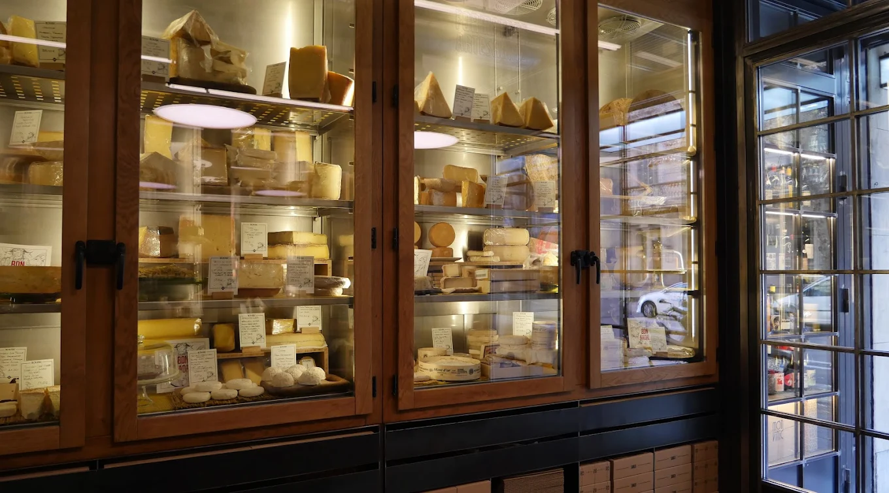

Food Guide
Viana Barcelona

Artisan cocktails, tapas & refined Mediterranean-style dishes with global twists in a stylish space.
Address: Carrer del Vidre, 7, Ciutat Vella, 08002 Barcelona, Spain
Patisserie Hofmann

Delicious pastries for all times of day and all ages.
Address: Carrer dels Flassaders, 44, Ciutat Vella, 08003 Barcelona, Spain
La Vinya del Senyor

Charming restaurant with outdoor tables offering an ample wine list & a menu of tapas & bar bites. Good for groups of friends visiting the city.
Address: Plaça de Santa Maria, 5, Ciutat Vella, 08003 Barcelona, Spain
Brunch and Cake

Brunch & Cake is an award winning all-day dining restaurant, known for hosting in iconic locations with beautiful interiors, wholesome dishes, generous portions & a place which provides one of a kind experiences
Address: Carrer d'Enric Granados, 19, L'Eixample, 08007 Barcelona, Spain
Món Vínic - Bar de Vinos y Quesos

Wine and cheese bar. Open til 9pm it's a great spot to get the night started before heading out to the clubs.
Address: Carrer de la Diputació, 251, L'Eixample, 08007 Barcelona, Spain